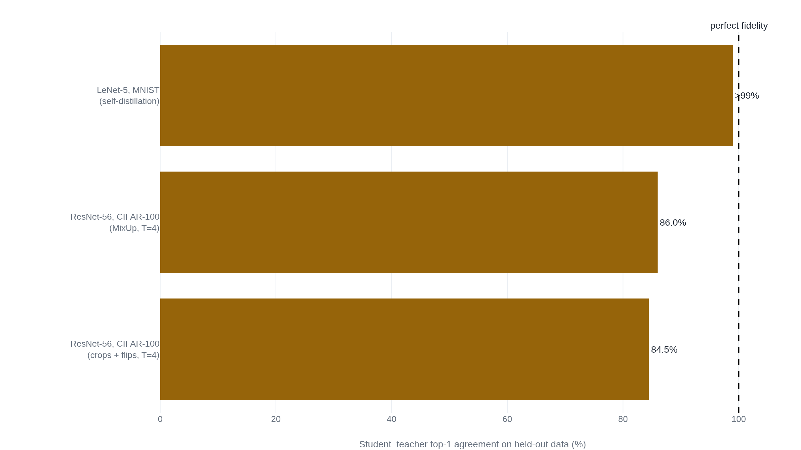

A distilled network inherits its teacher's accuracy, not its predictions
Six years after Geoffrey Hinton proposed training a small network on a teacher's softened probabilities, a controlled study traced the technique's stubborn failures to an optimization problem no one had been solving.
Distilling the Knowledge in a Neural Network
Read the paperA very simple way to improve the performance of almost any machine learning algorithm is to train many different models on the same data and then to average their predictions. Unfortunately, making predictions using a whole ensemble of models is cumbersome and may be too computationally expensive to allow deployment to a large number of users, especially if the individual models are large neural nets. Caruana and his collaborators have shown that it is possible to compress the knowledge in an ensemble into a single model which is much easier to deploy and we develop this approach further using a different compression technique. We achieve some surprising results on MNIST and we show that we can significantly improve the acoustic model of a heavily used commercial system by distilling the knowledge in an ensemble of models into a single model. We also introduce a new type of ensemble composed of one or more full models and many specialist models which learn to distinguish fine-grained classes that the full models confuse. Unlike a mixture of experts, these specialist models can be trained rapidly and in parallel.1
A network's knowledge is not its weights
Train a dozen neural networks on the same data, average their predictions, and you almost always get a better classifier than any one of them.1 The averaged ensemble is also close to useless in production. A dozen forward passes per query costs a dozen times the latency and hardware. That expense keeps good models off phones and out of low-latency services.1 Buciluǎ, Caruana, and Niculescu-Mizil had shown in 2006 that the accuracy of such an ensemble could be poured into a single small network cheap enough to deploy.2 What Hinton, Vinyals, and Dean took up in 2015 was the prior question: what, exactly, is being poured.
Their answer starts by refusing to identify a model's knowledge with its weights. A more useful view is that the knowledge is a learned mapping from input vectors to output vectors.1 Two networks with different architectures and not a single weight in common can express the same mapping, so the knowledge can move between them once you can say what the mapping is. A trained classifier says what the mapping is every time it runs. It reports not just the class it picks but the full probability it assigns to every class. Train the small network to reproduce those probabilities and you have transferred the mapping without transferring the parameters.
The information hiding in the wrong answers
The class a network picks is the least of what it tells you. A model trained to recognize vehicles gives a photo of a BMW a small probability of being a garbage truck and a far smaller probability of being a carrot.1 Those two small numbers are not noise. They record what the network learned about the shape of the world: a BMW resembles a garbage truck more than it resembles a carrot. The relative sizes of the probabilities a model assigns to answers it rejects are its dark knowledge, the similarity structure written into everything the model declines to predict.1
On a task like MNIST the effect is extreme. A well-trained digit classifier is nearly certain about every example, so almost all of its output sits on the correct answer. The leftover probability still carries the structure: one handwritten 2 might be given a probability of 10⁻⁶ of being a 3 and 10⁻⁹ of being a 7, while another 2 leans the other way.1 That ratio says which twos look threeish and which look sevenish, and it is exactly what a one-hot label cannot say. A hard label, a 1 for the true class and 0 everywhere else, treats every wrong answer as equally wrong. The teacher's softened output ranks them.
This is why soft targets can carry more information per example than labels. A full distribution over many classes, most of its mass in a high-entropy tail, constrains the student far more tightly per example and varies less from one example to the next than a single correct label does.1 Hinton, Vinyals, and Dean note the practical payoff: a student can often be trained on much less data, at a much higher learning rate, than the teacher needed.1
Raising the temperature of the softmax
The trouble is that on MNIST those informative ratios are numbers like 10⁻⁶, and a cross-entropy loss barely feels them: a target that small contributes almost nothing next to the target of nearly 1 on the correct class.1 Ba and Caruana had worked around this the year before by regressing the student directly onto the teacher's logits, the raw scores fed into the final softmax, sidestepping the softmax's habit of crushing small probabilities toward zero.3 Hinton, Vinyals, and Dean found a more general fix, and it needs only one knob.
- z_ithe logit for class i, the network's raw score before the softmax.
- Tthe temperature. At T = 1 this is the ordinary softmax; larger T flattens the distribution.
- q_ithe softened probability the teacher assigns to class i, used as the student's target.
At a temperature of 1 the softmax behaves as usual. As the temperature grows, the probabilities spread toward uniform, lifting the buried ratios into a range the loss can see.1 Generate the teacher's targets at a high temperature, train the student against them at the same high temperature, then reset the student to a temperature of 1 for deployment.1 When the true labels are on hand, the recipe adds a second term: an ordinary cross-entropy against the hard labels at a temperature of 1, weighted well below the soft-target term.1 One bookkeeping detail matters. The gradient from the soft targets shrinks as 1/T², so at high temperature the hard-label gradient would swamp it. Multiplying the soft term by T² holds the two forces in proportion as the temperature is tuned.1
The temperature also explains Ba and Caruana's logit regression as a limiting case of the same idea.
At a lower temperature the loss quietly ignores the teacher's most negative logits, which are barely constrained during the teacher's own training and may be noise. When the student is far too small to absorb everything the teacher knows, an intermediate temperature, attending to some of that structure but not all of it, works best.1
What soft targets bought
The MNIST results made the case in three numbers. A large, heavily regularized network with two hidden layers of 1200 units made 67 test errors. A smaller network of two 800-unit layers, trained the ordinary way, made 146. The same small network, its only extra help a soft-target loss from the large one at a temperature of 20, made 74.1 Most of the gap between the small network's own result and the large network's closed, and it closed even though the soft targets never contained the translated and jittered images the large network had been regularized with. The knowledge of how to generalize came across in the probabilities themselves.1
Then a stranger result. Hinton, Vinyals, and Dean removed every example of the digit 3 from the transfer set, so the student never saw a single 3 while learning. Tested on 1010 threes it had never met, it still read most of them correctly: after correcting one badly-set bias, the distilled network got 98.6% of the test threes right.1 A concept it had no direct examples of arrived entirely through its resemblance to the concepts it did see.
Speech carried the same lesson on a system that was in commercial use. A ten-model ensemble lifted frame accuracy from 58.9% to 61.1%; a single distilled network the same size as the baseline recovered 60.8%, keeping more than 80% of the ensemble's gain in one deployable model.1
| System | Frame accuracy | WER |
|---|---|---|
| Baseline | 58.9% | 10.9% |
| 10-model ensemble | 61.1% | 10.7% |
| Distilled single model | 60.8% | 10.7% |
Soft targets doubled as a regularizer. Trained on just 3% of the speech data, the baseline overfit to 44.5% test frame accuracy; the same network trained on the same 3% against soft targets reached 57.0%, within two points of the model trained on all the data.1 By 2015 the case looked closed: soft targets transfer a teacher's knowledge, and they do it well.
Does the student match the teacher?
The 2015 paper measured its students by accuracy: how often the distilled network gets the answer right. It never asked the other question its own story invites: how often the student's whole probability distribution agrees with the teacher's. Stanton, Izmailov, Kirichenko, Alemi, and Wilson asked it directly in 2021, and named the two things the field had been quietly conflating.4 Fidelity is how well the student matches the teacher's predictions. Generalization is how well the student predicts unseen data. The founding story assumes the first delivers the second: transfer the teacher's mapping faithfully and the student inherits the skill. The measurement found the two come apart.
On an easy task the picture is reassuring. Distilling a small LeNet-5 into an identical copy on MNIST, with enough transfer data, drives student–teacher top-1 agreement past 99%.4 On a modern task it falls apart. Distilling a ResNet-56 on CIFAR-100, with the student given the teacher's exact architecture so capacity is not the limit, the best agreement Stanton and colleagues could reach sat in the mid-eighties of a percent. Often it was lower.4

No standard intervention closed the gap. Enlarging the transfer set with generated images helped a little, and so did heavy data augmentation. The best single recipe, MixUp at a temperature of 4, reached 86% test agreement, with plain crops and flips close behind at 84.5%.4 The reason turned out to be blunt: the student does not match the teacher on the test set because it does not even match the teacher on the training set.4 Training a ResNet-20 to copy itself, Stanton and colleagues reached 78.95% train agreement after 300 epochs, and only 83.3% after 5000. That is a 2% gain for sixteen times the compute, on a problem where a perfect answer provably exists: the teacher's own weights achieve zero loss.4 Distillation is an unusually hard optimization problem, and ordinary training does not solve it.
One result looks like a counterexample. In self-distillation, where teacher and student are the same size, the student sometimes beats the teacher, as Furlanello and colleagues showed with Born-Again Networks.5 But a student that perfectly matched its teacher could not outscore it. The improvement exists precisely because the student fails to copy the teacher; the failure is doing the work.4 Where the teacher is genuinely stronger than any student, an ensemble or a much larger model, that same failure to copy is exactly what you cannot afford.
Where distillation earns its name
None of this makes distillation a failure. It makes it a different tool than its name promises. When the goal is a smaller model that works, distillation delivers, with years of deployed evidence behind it. DistilBERT reproduces 97% of BERT's language-understanding score at 40% less size and 60% more speed, distilling during pre-training rather than on a single task.6 That is the 2015 promise kept: a cheaper network that generalizes almost as well as an expensive one.
What Stanton's result costs is the stronger reading, the one the word knowledge invites, that the student has taken on the teacher's actual beliefs. For most of what practitioners want, which is generalization, that stronger reading is not needed. For the rest, calibration you can trust, an interpretable stand-in for a black box, behavior that faithfully mirrors a reference model, fidelity is the point, and the mid-eighties is not enough.4
The fix exists, and it is expensive. Beyer and colleagues treat distillation as literally matching the teacher's function: identical teacher and student views of each input, aggressive augmentation, and training for thousands of epochs. Given that, the optimization problem Stanton diagnosed begins to yield, and a ResNet-50 distilled this way reaches 82.8% top-1 on ImageNet.7 Patience and consistency buy the fidelity that ordinary schedules never reach. Few teams will pay 9600 epochs for it.
One more finding pins the 2015 intuition in place by showing what breaks it. Müller, Kornblith, and Hinton found that a teacher trained with label smoothing, a routine trick that improves the teacher's own accuracy, makes a worse teacher for distillation.8 Label smoothing pulls each class's examples into a tight cluster and erases the between-class resemblances in the logits. The teacher gets better, the dark knowledge gets deleted, and the student learns less.8 The relative probabilities of the wrong answers were carrying the freight all along, exactly as the 2015 paper claimed.
Distillation reliably ships a compact network that generalizes about as well as its teacher, which is what most deployments need and what a decade of results confirms.6 It does not reliably ship the teacher's predictive distribution. On modern architectures the student typically matches the teacher's top-1 answer only around 85% of the time. Copying the teacher is an optimization problem ordinary training fails to solve.4 Expect a smaller model that works, not a faithful replica of the teacher's judgment, unless calibration, interpretability, or faithful behavior is the goal and you will pay Beyer's schedule to get it.7 An optimizer that closed the train-agreement gap cheaply would overturn this.
Sources
- arXiv · Hinton, Vinyals & Dean, "Distilling the Knowledge in a Neural Network" (2015)
- KDD '06 · Buciluǎ, Caruana & Niculescu-Mizil, "Model Compression"
- arXiv · Ba & Caruana, "Do Deep Nets Really Need to be Deep?" (2014)
- arXiv · Stanton, Izmailov, Kirichenko, Alemi & Wilson, "Does Knowledge Distillation Really Work?" (NeurIPS 2021)
- arXiv · Furlanello, Lipton, Tschannen, Itti & Anandkumar, "Born-Again Neural Networks" (ICML 2018)
- arXiv · Sanh, Debut, Chaumond & Wolf, "DistilBERT" (2019)
- arXiv · Beyer, Zhai, Royer, Markeeva, Anil & Kolesnikov, "Knowledge distillation: A good teacher is patient and consistent" (CVPR 2022)
- arXiv · Müller, Kornblith & Hinton, "When Does Label Smoothing Help?" (NeurIPS 2019)